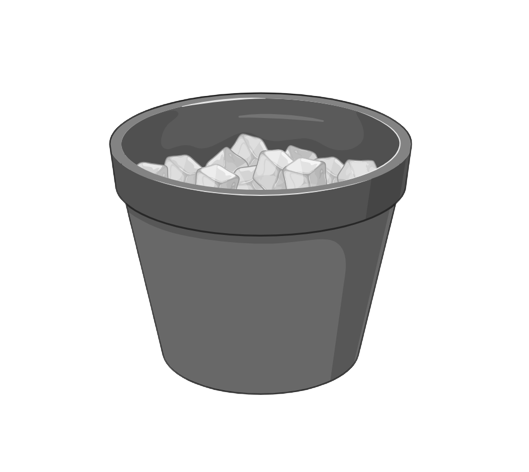
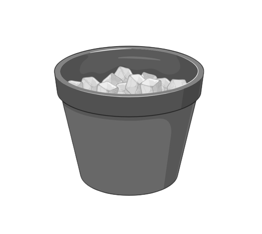
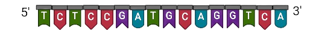
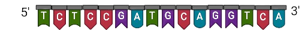

Instructions
- Click on "Start the Experiment" button.
- In step 1, select components from the dropdown button "Choose the PCR reaction components for thawing on ice"
- In step 2, click on "Preparation of PCR mixture" button.
- In step 3, click on "Incubation of the PCR reaction mixture in a thermal cycler" button. Then click on "Open" button to open the thermal cycler. To placed the tube in the cell plate, click on the tube. After tube is placed in the cell plate, click on "Close" button to close the thermal cycler.
- Click on "Run" button of Thermal Cycler for PCR amplification. The schematic representaion of PCR amplification will be appear on right side.
Actions
Input panels
| Step 1 | |
| Step 2 | |
| Step 3 | |


 

 
